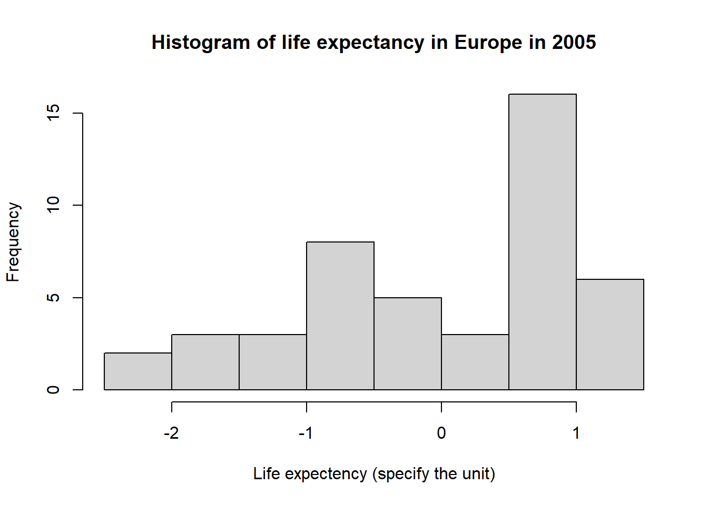
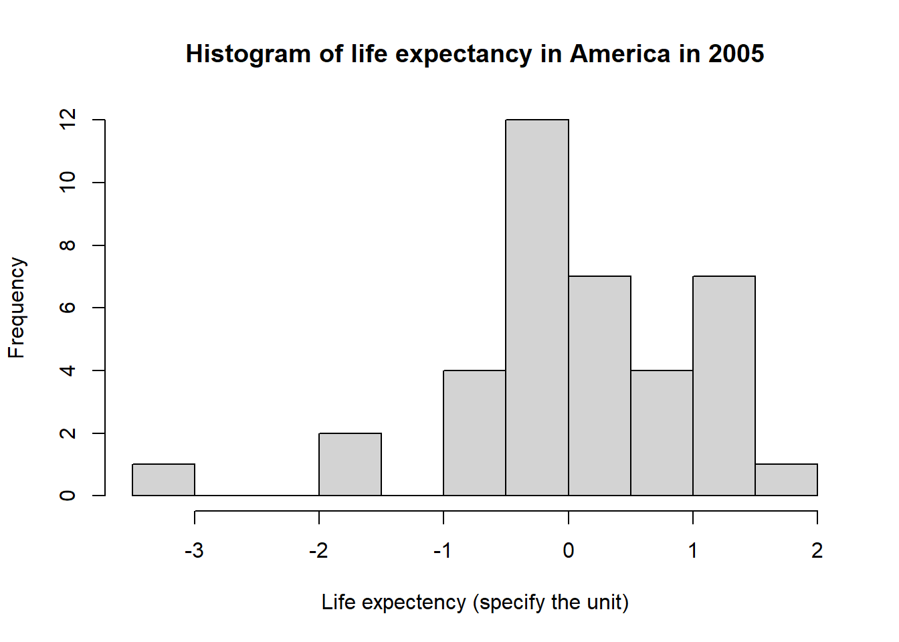

What you will learn:
IMPORTANT NOTE: You do not need to answer the questions in your hand out. The questions asked in this document are to prepare you to the MCQ on BlackBoard.
In this exercise, each of you will analyze a different variable. In the NameOgVariables.pdf you will which of the two variables you are supposed to use and in which dataset you will find them. The document DataDescription.pdf contains a brief description (associated label / label).
In this exercise I will use Verden2005.sav as an example.
Note that your dataset is a .sav file, to open it you need to use the function
read.spss()as demonstrated below.
The data is, as in Exercise 1, taken from the World Bank. Data source is: World Bank 2016. World Bank development indicators
From BlackBoard, in the exercise folder dedicated to LM2, you will find the files Verden2005.sav, Verden2006.sav, etc…. Download one of these containing your variables and save it in a folder created for this exercise.
Load the dataset in R.
Since your file is an .sav file you have to open it as follow:
library(foreign)
data <- read.spss('Verden2005.sav', to.data.frame=TRUE)If you do not have the library foreign you need to install it:
install.packages('foreign')Find your Variable 1 and Variable 2 in the .sav file and answer the questions below for both variables:
- What is the type of the variable? Use the function
str()- For how many countries devices do you have data for? Tip: find the number of missing data for your variable by using the function
table()for example- What is the average? Use the function
mean()- What is the median value? Use the function
median()- What is the standard deviation? Use the function
sd()- What is the variance? Use the function
var()- What is the highest / lowest value in the data material?
IMPORTANT NOTE: when using the summary functions such as mean(), var() etc. You may have to use the argument na.rm = TRUE. When there is missing data in the column R will return NA if you use the summary statistics. To avoid this write as follow (for instance for the mean function):
# If I do not account for the NAs
mean(data$LifeExp05)## [1] NA# If I account for the NAs
mean(data$LifeExp05, na.rm = TRUE)## [1] 68.43416So far we have looked at the whole world in one. Now we will calculate descriptive statistics for two continents separately. Note the Region variable in the data file. Each country (entity in the dataset) is assigned a code for continental affiliation. The codes are as follows:
1 Europe 2 Middle East 3 Asia 4 Africa 5 America (north, central and south) 6 Oceania (Australia m.m.)
What is the type of the
Regionvariable? Do you think this is appropriate?
We will now calculate descriptive statistics for all countries belonging to two continents. You can decide which ones.
For example, if you want to compare countries in Europe with countries in Africa, select region 1 and region 4 and subset the countries from the continent you are interested in. You must also make sure that the descriptive statistics are calculated separately for the two continents.
Remember the subsetting section in the tutorial. For instance, if I want to do summary statistics on Europe and America I write:
# I subset the dataset by taking the observations from the
# continents I am interested in
sub <- data[data$Region == 1 | data$Region == 5,]
# I check if the subset has been successful
unique(sub$Region)## [1] 5 1# You can also create one dataset for Europe and one dataset for America:
Europe <- data[data$Region == 1,]
America <- data[data$Region == 5,]Once you have done the subsetting, do the summary statistics separately for each continent. That is, you will calculate the mean, standard deviation, variance … for each continent.
Make histograms for the two variables you were assigned and for each of the two continents. You should have 4 histograms in total.
The histograms generated by R are not on the same scale and are therefore unsuitable for comparison. To facilitate comparison we need to change for the variable. We will standardize the variables.
To standardize means to substract the mean and divide by its standard deviation. The formula is as follow:
\(\Large \frac{x - \overline{x}}{\sigma_{x}}\)
\(x\) being a value of the variable \(\overline{x}\) being the mean of the variable \(sd(x)\) being the standard deviation of the variable
For instance, here I compare the variable LifeExp05 for both Europe and America.
# First I standardized the values for Europe and America. For this I will create two vectors representing the standardized variables
Europe$LifeExp05_st <- (Europe$LifeExp05 - mean(Europe$LifeExp05, na.rm = TRUE)) /
sd(Europe$LifeExp05, na.rm = TRUE)
America$LifeExp05_st <- (America$LifeExp05 - mean(America$LifeExp05, na.rm = TRUE)) / sd(America$LifeExp05, na.rm = TRUE)
# Then I draw histograms of the standardized variables:
hist(Europe$LifeExp05_st, main = 'Histogram of life expectancy in Europe in 2005',
xlab = 'Life expectency (specify the unit)', ylab = 'Frequency')
hist(America$LifeExp05_st, main = 'Histogram of life expectancy in America in 2005',
xlab = 'Life expectency (specify the unit)', ylab = 'Frequency')
I let you as an exercise to add colors to your histograms.
Study the results that you get in the output window. Discuss with a fellow student the following questions (the questions may be repeated in the test associated with this exercise):
- Which statistical analysis would be suitable to determine which continent overall scores “highest” with respect to the variable in question?
- What statistical analysis would be appropriate to determine if the countries in one of the regions are more different or more similar than the countries of the other region?
- How can you use frequency histograms to illustrate the two previous questions?
| Points | Criteria |
|---|---|
| 2 points | Descriptive statistics for both variables |
| 2 points | Frequency histogram for two different continents for variable 1 |
| 2 points | Frequency histogram for two different continents for variable 2 |
| 2 points | Short but descriptive figure captions |
| 1 points | Explanation of the variables |
| 1 points | Format pdf and as one file (max 3 pages) |